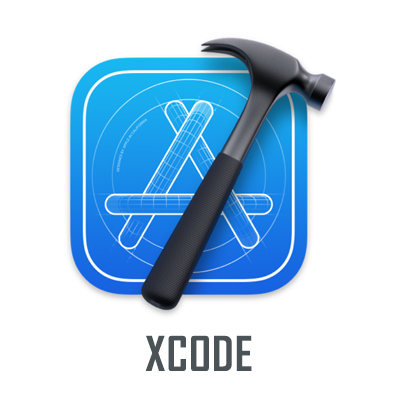

Experience
經歷
-
前思資訊有限公司 | IOS工程師
April 2020 - Now
－ APP部門相關的新產品開發
－ 公司APP專案的維護
－ 協助公司與承包商洽談及引導外包專案進行的進度
－ 目前在公司的team所負責的專案,是開發一款關於直播APP的產品 -
采盟股份有限公司 | APP工程師
October 2019 - April 2020
－負責公司的ERP系統維護
－開發部門內部使用的APP(IT部門專用報修系統)
－設計使用介面
－串接後端API，讓資料能跟部門系統連動 -
永大機電工業股份有限公司 | 維修工程師
May 2017 - March 2019
－產品的售後保養以及維修
Education
學歷
-
聖約翰科技大學 | 電機工程系
September 2012 - June 2016

-
國立淡水高級商工職業學校 | 電機科
August 2009 - June 2012
Skill
技能
Programming 程式語言
Version Control 版本控制
Tools 擅長工具
